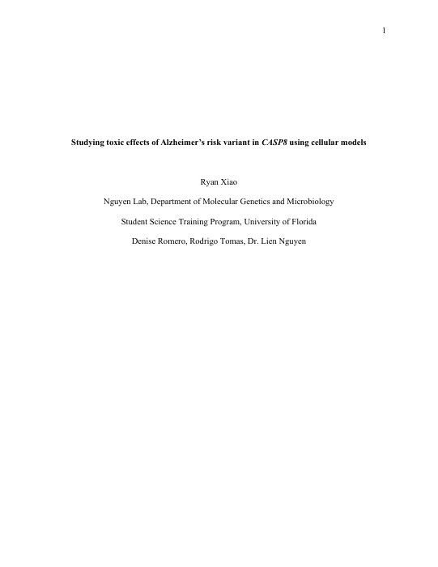
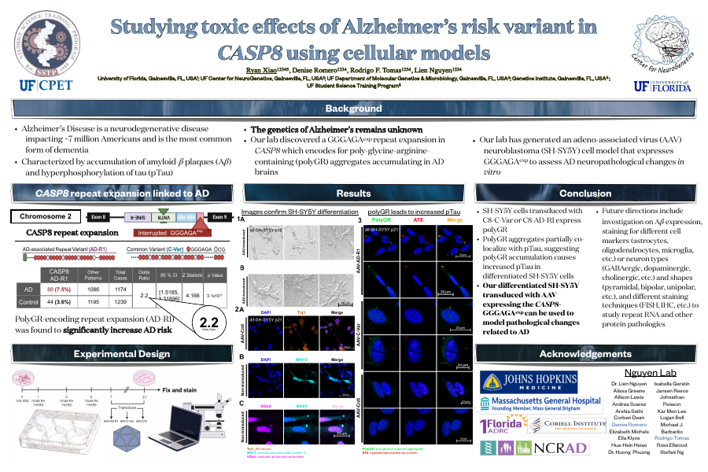

Skip to downloads
Ryan Xiao
Research
Theatre
Mentorship
Speech & Debate
Back to portfolio ↗
01 / RESEARCH
Download my
Research Portfolio
PDF · Download
↓
02 / THEATRE
Download my
Theatre Résumé
PDF · Download
↓
SSTP Research Outputs

Download my research paper
PDF
↓

Download my poster presentation
PDF
↓